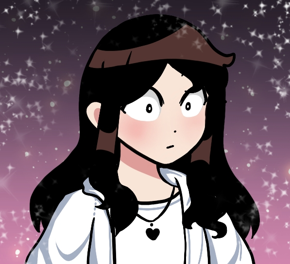
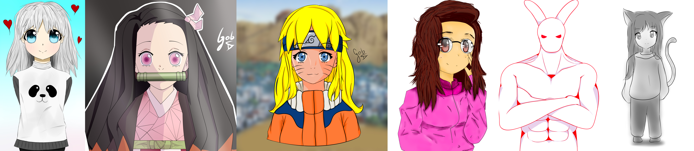

About-me
Hello, my name is Pokkie and I'm an 18-year-old young artist looking for a space on platforms as an independent digital illustrator. Currently, I'm attending a Digital Design college to expand my knowledge and to carve out a place in the digital illustration field.
My Story and Goals
I became interested in the art field since my childhood, whether it was in musical art or illustrations, and I always dreamed of achieving a goal focused on the arts. In the early stages of my adolescence, I began to consider pursuing a career as a cartoonist, as my goal with art has always been to evoke feelings and emotions in people, to elicit strong emotions simply by looking at my illustrations.
Later, at the age of 15, I decided to pursue life solely as an illustrator, and I began my in-depth studies on all aspects of art, from its simplest form of representation to the most complex and heartfelt. I fell in love with the incredible feelings that producing something people would look at with interest and be able to absorb the emotions of art, conveying my message behind the drawings.
I underwent many studies of various types, including composition, anatomy, form, colors, among numerous others, and gained experience in some freelance work, expanding my knowledge of digital art. This phase was crucial for the development of my skills and for consolidating my passion for illustration.
Currently, I seek to work with Digital Illustration from home and to convey all the feelings I desire through just one image. I believe in the power of art to communicate and touch people in profound and meaningful ways, and this motivates me to keep improving and exploring new techniques and styles.
My goal is to continue to learn and grow as an artist while sharing my creations with the world and inspiring others through my work. Each illustration is an opportunity to express something unique and to connect emotionally with those who see it.
